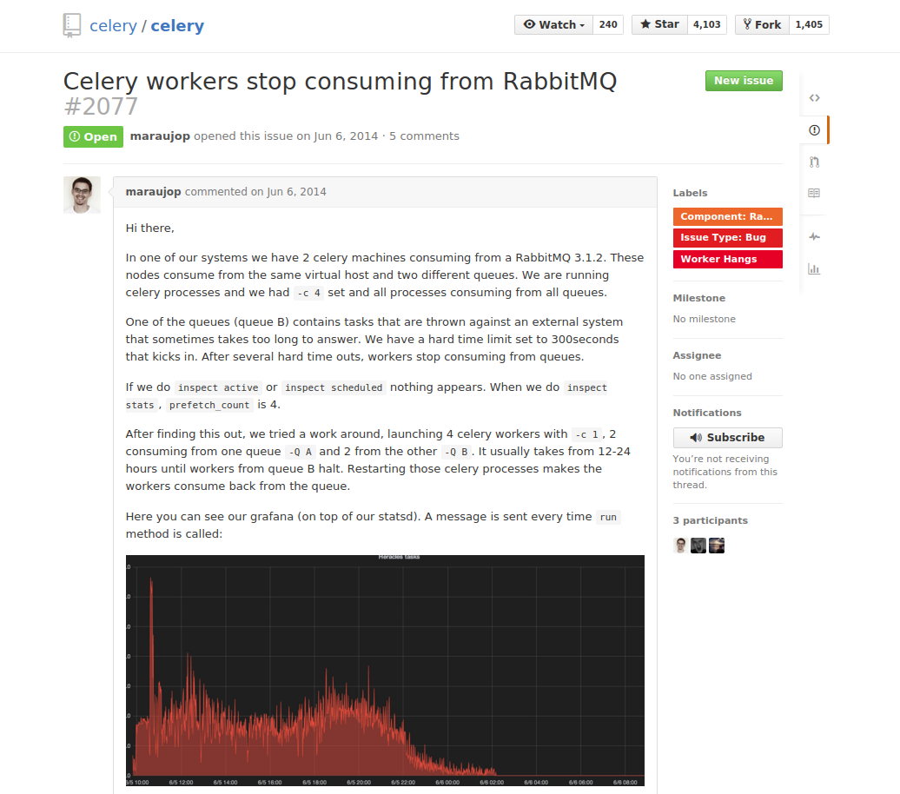
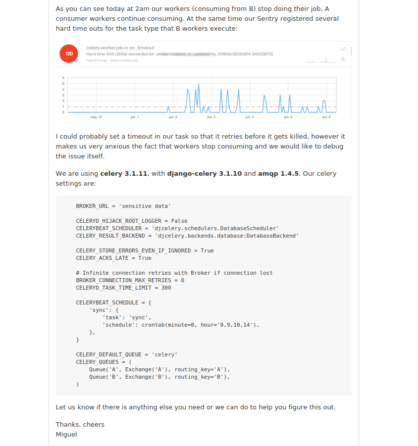

SQJobs
Federico Mon
federico.mon@ticketea.com
2015-11-21
Intro
Intro to Async Queued Task Execution
SQJobs implementation
History
Not so long ago, Celery was used in Ticketea.

Some Split-brains happened in RabbitMQ, leading to lot of work fixing the situation.
Workers go on strike


Migrations to OpenERP were taking >48 hours
The goal was to quit using Celery and RabbitMQ and use something simpler instead
For more details you can ask Iñaki or Miguel
@igalarzab and @maraujop
The problem
Resilience in a network
"Resiliency is the ability to provide and maintain an acceptable level of service in the face of faults and challenges to normal operation."

Possible solutions:
Use an existing solution
RQ (Redis)

Create our own solution
- Easier to debug
- Choose the broker we want
- Scratch your own itch
Crafting the solution
Different delivery guarantees
- Only-once-delivery
- At-least-once-delivery
If we pick only-once-delivery…
What if messages are dropped?

If we pick at-least-once-delivery…
Then, what if messages are received more than once?

Write Idempotent Jobs
The success
Migration to OpenERP took 6 hours
SQjobs workers are quite fast, and easier to debug than Celery's
At least for us :)
The Job
Must be in jobs.py
models.py must exist
Sample Job
from sqjobs.job import Job class AdderJob(Job): name = 'adder_job' queue = 'my_queue' def run(self, *args, **kwargs): return sum(args)
Launching a Job
From python
from sqjobs import create_sqs_broker from myapp.jobs import AdderJob kwargs = { 'access_key': settings.SQJOBS_SQS_ACCESS_KEY, 'secret_key': settings.SQJOBS_SQS_ACCESS_KEY } broker = create_sqs_broker(**kwargs) broker.add_job(AdderJob, *[1, 2, 3, 4])
From PHP
$payload = array( 'name' => $task_name, 'args' => $args, 'kwargs' => $kwargs ); $json_payload = json_encode($payload); $this->_sqs = new AmazonSQS($amazon_config['aws_key'], $amazon_config['aws_secret_key']); $result = $this->_sqs->send_message($this->_queue_urls[$queue_name], base64_encode($json_payload));
The Worker
Workers listen in a queue and execute jobs
Built as a django command
You can launch as many as you want
Usage:
$ ./manage.py sqjobs worker $queue_name
Eager mode
Eager mode is a simpler execution mode
Tasks are run synchronously
Instead of sending them to the message broker
So there is no need for a queue nor running workers.
Meant for development and unit testing.
Sample execution
>>> from sqjobs import create_eager_broker >>> broker = create_eager_broker() >>> from jobs import AdderJob >>> job_added = broker.add_job(AdderJob, *[1, 2, 3]) >>> job_added ('fdb005d3-276f-4f75-8e8e-c8fcde67043c', AdderJob()) >>> job_added[1].result 6
A Result-backed Job
Status of the job is stored in a database.
It uses a Django model, Django is needed here.
Can be used, for example, in a web application, to know when the job is done or fails, and act accordingly.
Sample ResultJob
from sqjobs.contrib.django.djsqjobs.result_job import ResultJob class DummyResultJob(ResultJob): name = 'dummy_result_job' queue = 'dummy_queue' def run(self, *args, **kwargs): pass
How to use a resultjob
>>> from sqjobs.contrib.django.djsqjobs.models import JobStatus >>> my_job = JobStatus.objects.get(job_id='1234') >>> if my_job.status == JobStatus.SUCCESS: ... print my_job.result
A Periodic task
Will be executed like if they were in a crontab.
This requires another piece of software
called Beater
Cron ranges can be localized to a timezone
And support daylight saving changes.
Sample PeriodicJob
from djsqjobs import PeriodicJob class DummyPeriodicJob(PeriodicJob): name = "dummy_periodic_job" queue = "my_queue" schedule = "1 0 * * *" timezone = "Europe/Madrid" def run(self, *args, **kwargs): pass
The Beater
A special component that queue jobs at the right moment.
By waking up every certain time, check what jobs should be queued, and reprogram them.
You can launch as many as you need.
So if any of them dies, the others will queue your job.
They use the django database to synchronise and launch the job only once.
Despite your jobs should be idempotent.
Usage:
$ ./manage.py sqjobs beater $queue_name
Set up and Tear down
Job execution is divided in three different stages:
set_up, run, tear_down
- Only
runis mandatory set_upwould be called before run if exists- And
tear_downright afterrunif exists.
Sample Job
from abc import abstractmethod, ABCMeta from six import add_metaclass import logging logger = logging.getLogger('timed_job') @add_metaclass(ABCMeta) class TimedJob(Job): def set_up(self, *args, **kwargs): super(TimedJob, self).set_up(*args, **kwargs) self.start_time = datetime.now() def tear_down(self, *args, **kwargs): end_time = datetime.now() delta = end_time - self.start_time logger.info('%s finished in %d seconds' % (self.name, (delta * 1000).seconds)) super(TimedJob, self).tear_down(*args, **kwargs) @abstractmethod def run(self, *args, **kwargs): raise NotImplementedError
Failure and Success
We can define failure and success methods
on_success and on_failure methods will be called
depending on the output of our job execution.
Example of on_success and on_failure
from abc import abstractmethod, ABCMeta from six import add_metaclass import logging logger = logging.getLogger('logger_job') @add_metaclass(ABCMeta) class LoggerJob(Job): def on_success(self, *args, **kwargs): logger.log('Successfully finished job %s' % self.name) super(LoggerJob, self).on_success(*args, **kwargs) def on_failure(self, *args, **kwargs): logger.log('Failed job %s' % self.name) super(LoggerJob, self).on_failure(*args, **kwargs) @abstractmethod def run(self, *args, **kwargs): raise NotImplementedError